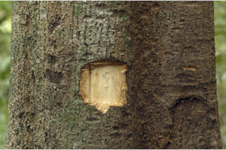
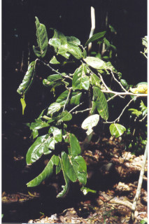
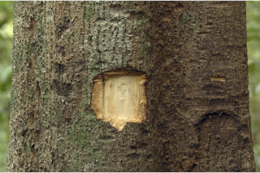
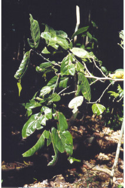

Medium sized trees, up to 30 m tall.
6ಮೀ ಎತ್ತರದವರೆವಿಗೆ ಬೆಳೆಯುವ ಸಣ್ಣ ಮರಗಳು.
30 മീറ്റര് വരെ ഉയരത്തില് വളരുന്ന ഇടത്തരം മരങ്ങള്.
மிதமான உயரமுடைய மரம், 30 மீ. உயரம் வரை வளரக்கூடியது.
Bark lenticelled; blaze cream.
ತೊಗಟೆಯ ಮೇಲ್ಮೈ ಸೂಕ್ಷ್ಮವಾಗಿ ಸೀಳಿರುತ್ತವೆ.
ശ്വസനരന്ധ്രങ്ങളുള്ള പുറംതൊലി; വെട്ട്പാടിന് ക്രീം നിറം.
மரத்தின் பட்டை லெண்டிசெல்லேட் (பட்டை துளைகள்) கொண்டது; உள்பட்டை கிரீம் நிறம்.
Branches and branchlets drooping.
ಕಿರುಕೊಂಬೆಗಳು ತೆಳುವಾಗಿದ್ದು, ಗುಂಡಾಕಾರದಲ್ಲಿದ್ದು ರೋಮರಹಿತವಾಗಿರುತ್ತದೆ.
തൂങ്ങിക്കിടക്കുന്ന ശാഖകളും ഉപശാഖകളും.
கிளைகள் மற்றும் சிறிய நுனிக்கிளைகள் நிலத்தை நோக்கி இருக்கும் (தொங்கியவை).
Leaves simple, alternate, distichous; petiole 0.5-1.1 cm long, canaliculate, subglabrous; lamina 13-25 x 4-7.5 cm, oblong-lanceolate, apex caudate - acuminate, base acute, margin entire, glabrous, subcoriaceous; midrib raised above; secondary_nerves 10-12 pairs; tertiary_nerves reticulo-percurrent.
ಎಲೆಗಳು ಸರಳವಾಗಿದ್ದು, ಪರ್ಯಾಯವಾಗಿದ್ದು, ಕಾಂಡದ ಎರಡೂ ಕಡೆ ಎದುರು ಬದರಿನ ಲಂಬಸಾಲಿನಲ್ಲಿರುತ್ತದೆ. ತೊಟ್ಟು 0.5 ರಿಂದ 0.7 ಸೆಂ.ಮೀ. ಉದ್ದವಿದ್ದು ರೋಮರಹಿತ ಅಥವಾ ಅತಿ ಸೂಕ್ಷ್ಮವಾದ ಮೃದು ತುಪ್ಪಳದಿಂದ ಕೂಡಿರುತ್ತದೆ. ಪತ್ರಗಳು 5 - 8 × 1.8 - 3 ಸೆಂ.ಮೀ. ಗಾತ್ರದಲ್ಲಿದ್ದು, ಭರ್ಜಿಯಾಕಾರದವುಗಳಾಗಿದ್ದು ಚೂಪಲ್ಲದ ತುದಿ, ಚೂಪಾದುದರಿಂದ ಹಿಡಿದು ಒಳಬಾಗಿದ ತಳವುಳ್ಳ ಬುಡಭಾಗವನ್ನು ಹೊಂದಿದ್ದು, ಕಾಗದವನ್ನೋಲುವ ಮೇಲ್ಮೈ ಹೊಂದಿದ್ದು ರೋಮರಹಿತವಾಗಿರುತ್ತವೆ; ಮಧ್ಯನಾಳ ಪತ್ರದ ಮೇಲ್ಭಾಗದಲ್ಲಿ ಚಪ್ಪಟೆಯಾಗಿರುತ್ತವೆ. ಎರಡನೇ ದರ್ಜೆಯ ನಾಳಗಳು ಸುಮಾರು 10 ಜೋಡಿಗಳಿದ್ದು ಮೂರನೇ ದರ್ಜೆಯ ನಾಳಗಳು ಸ್ಥೂಲವಾದ ಜಾಲಬಂಧ ನಾಳವಿನ್ಯಾಸದಲ್ಲಿರುತ್ತವೆ.
ഇലകള് ലഘുവും ഏകാന്തരക്രമത്തില് തിന്റെ മാത്രം ഒരുഭാഗത്തുമാത്രമായി അടുക്കിയിരിക്കുന്നു; ഇലഞെട്ട് 0.5 മുതല് 1.1 സെ.മി നീളമുള്ളതും, ചാലോട് കൂടിയതും ഉപഅരോമിലവുമാണ്; പത്രഫലകത്തിന് 13 മുതല് 25 സെ.മി നീളവും 4 മുതല് 7.5 സെ.മി വീതിയുമാണ്, ആയത-കുന്താകാരം, അഗ്രം നീ വാലോടുകൂടിയതും, ആധാരം നിശിതവുമാണ്, അരികുകള് അവിഭജിതമാണ്, ഉപചര്മ്മില പ്രകൃതം; മുഖ്യസിര മുകളില് ഉയര്ന്നിരിക്കുന്നതാണ്; ദ്വിതീയ ഞരമ്പുകള് 10 മുതല് 12 ജോഡികള്; ത്രിതീയ ഞരമ്പുകള് പെര്കറന്റ് ജാലിതം
இலைகள் தனித்தவை, மாற்றுஅடுக்கமானவை, இருநெடுக்கு வரிசையிலையடுக்கம் (டைஸ்டிக்கஸ்); இலைக்காம்பு 0.5-1.1 செ.மீ, நீளமானது, இலைக்காம்பு குறுக்குவெட்டுத் தோற்றத்தில் கேனாலிகுலேட், நுண்ணிய உரோமங்களுடையது அல்லது உரோமங்களற்றது; இலை அலகு 13-25 X 4-7.5 செ.மீ., நீள்சதுரம்-ஈட்டி வடிவ இலை, அலகின் நுனி வால் போன்று நீண்டு - அதிக்கூரியது, அலகின் தளம் கூரியது, அலகின் விளிம்பு முழுமையானது, கீழ்பரப்பு உரோமங்களற்றது, சப்கோரியேசியஸ்; மையநரம்பு மேற்பரப்பில் அலகின் பரப்பைவிட மேலெழுந்தது; இரண்டாம் நிலை நரம்புகள் 10-12 ஜோடிகள்; மூன்றாம் நிலை நரம்புகள் வலைப்பின்னல்-பெர்க்கரண்ட்.
Flower in terminal or axillary fascicles of 1 to 3 together, pale green.
ಹೂಗಳು ಅತಿಸಣ್ಣ ಹಾಗೂ ಒಂಟಿಯಾಗಿದ್ದು, ಅಕ್ಷಾಕಂಕುಳಿನಲ್ಲಿರುವ ಪುಷ್ಪವೃತ್ತದ ಮೇಲೆ ಗುಚ್ಛಾಕಾರದಲ್ಲಿರುತ್ತವೆ, ಹೂ ತೊಟ್ಟುಗಳು ಮೃದು ತುಪ್ಪಳದಿಂದ ಆವೃತ್ತವಾಗಿದ್ದು 0.5 - 0.6ಸೆಂ.ಮೀ. ಉದ್ದವಿರುತ್ತದೆ.
പൂക്കള് അഗ്രത്തിലോ കക്ഷങ്ങളിലോ, 1 മുതല് 3 വരെ കൂട്ടമായുാകുന്ന പൂങ്കുലകളില് ഉണ്ടാകുന്നു, ഇളം പച്ചനിറം.
மலர்கள் தண்டின் நுனி அல்லது இலைக்கோணங்களில் கூட்டமாக அமைந்தவை, 1-3 கூட்டாக இருக்கும், வெளிறிய பச்சை நிறம்.
Berry, globose or oblong, about 7 cm long, seeds 8-10 in rows, compressed.
ಕಾಯಿಗಳು ಬೆರ್ರಿಪುಂಜಫಲ ಮಾದರಿಯದಲ್ಲಿದ್ದು ಒಂದು ಪುಂಜಫಲದಲ್ಲಿ ಆ ಬೆರ್ರಿಗಳವರೆಗಿರುತ್ತದೆ, ಉಪ-ಗುಂಡಾಕೃತಿಯನ್ನುಳ್ಳ ಬೆರ್ರಿಗಳು, ದಟ್ಟ ಮೃದು ತುಪ್ಪಳ ಸಮೇತವಾಗಿದ್ದು ಗುಬುಟುಗಳನ್ನು ಹೊಂದಿರುತ್ತವೆ. ಬೆರ್ರಿಗಳು 3ಕ್ಕಿಂತ ಹೆಚ್ಚು ಅನುಕ್ರಮವಾಗಿ ಎರಡು ಸಾಲಿನಲ್ಲಿ ಜೋಡನೆಯಲ್ಲಿರುವ ಬೀಜಗಳನ್ನೊಳಗೊಂಡಿರುತ್ತವೆ.
ഉദ്ദേശം 7 സെ.മി നീളമുള്ള ഗോളാകാരമോ ആയതാകാരമോ ഉള്ള സരസഫലമാണിതിന്, 8 മുതല് 10 വരെ പരന്ന വിത്തുകള് നിരയായി അടുക്കിയിരിക്കുന്നു.
முழுச்சதைகனி (பெர்ரி), கோள வடிவம் அல்லது நீள்சதுரம், சராசரியாக 7 செ.மீ. நீளமானது; விதைகள் 8-10 வரிசையாக இருக்கும், தட்டையானது.
 


